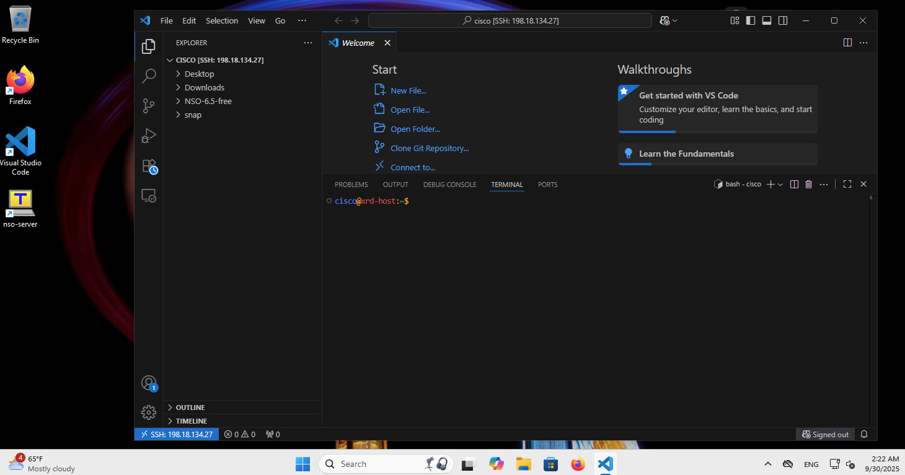
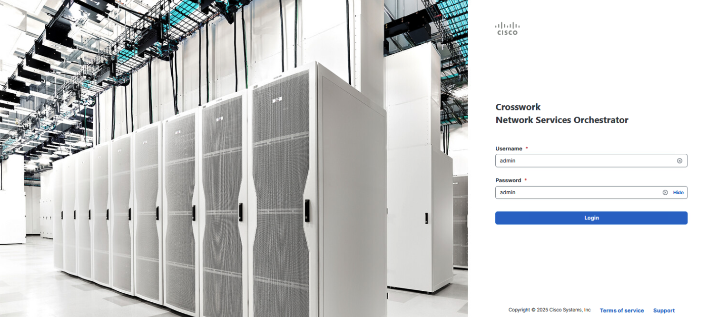
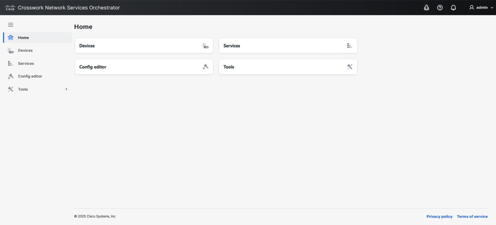
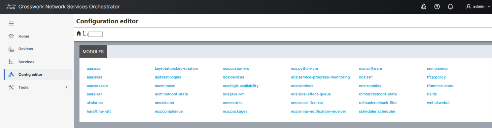
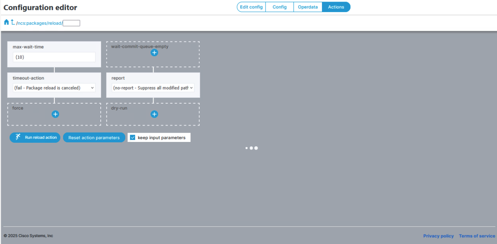
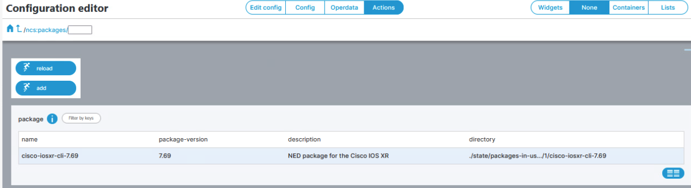
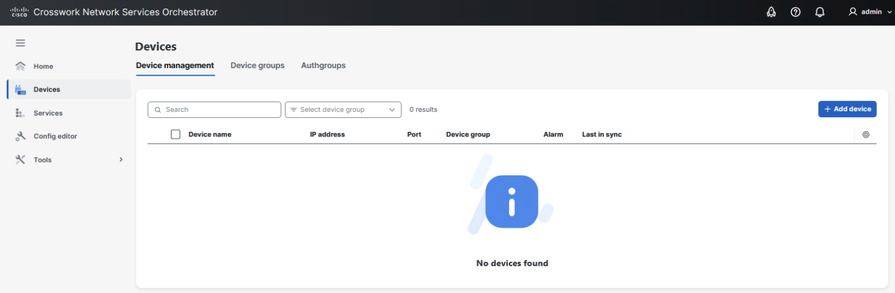

Lab 2: Install NSO and NEDs¶
Learning Objectives¶
By the end of this lab you will be able to:
- Locate and extract the NSO free-trial installer for the release pinned in this workbook (
{{ nso_version }}). - Perform a local NSO install, create an instance, and confirm the daemon is running.
- Install the Cisco IOS-XR NED package and reload packages in the Web UI.
Time Budget¶
- Extract installer — 5 min
- Install & instance — 22 min
- Web UI & NED — 8 min
Total — 35 min
Prerequisites¶
- Lab 1: Connect to the Workstation completed — you have a shell on linux-host.
- The NSO free-trial bundle for this workbook is available under your home directory (folder name may match
NSO-{{ nso_version }}-freeor your site’s layout — adjust paths below if your facilitator uses a different bundle).
Procedure¶
Commands use {{ nso_version }} so they track mkdocs.yml extra.nso_version. If your lab still ships a different directory name, substitute your path inside the command fences only.
Step 1: Locate the installer files¶
Open VS Code and work in the Terminal panel (or any shell on linux-host).

Navigate to the NSO installer directory and list the available binaries:
signed.bin listncs-{{ nso_version }}-cisco-asa-6.x-freetrial.signed.bin
ncs-{{ nso_version }}-cisco-ios-6.x-freetrial.signed.bin
ncs-{{ nso_version }}-cisco-iosxr-7.x-freetrial.signed.bin
ncs-{{ nso_version }}-cisco-nx-5.x-freetrial.signed.bin
nso-{{ nso_version }}-freetrial.container-image-build.linux.x86_64.signed.bin
nso-{{ nso_version }}-freetrial.container-image-prod.linux.x86_64.signed.bin
nso-{{ nso_version }}-freetrial.linux.x86_64.signed.bin
(Exact NED patch versions may differ; you need the Linux nso-…freetrial.linux.x86_64.signed.bin and the IOS-XR ncs-…-cisco-iosxr-….signed.bin.)
Step 2: Extract the NSO installer¶
Create a work directory and extract the signed installer (output is verbose; this can take a few minutes):
mkdir -p work
cd work
bash ../nso-{{ nso_version }}-freetrial.linux.x86_64.signed.bin --skip-verification
Step 3: Install NSO locally¶
Run the extracted installer with the --local-install flag:
NCS installation completeINFO Using temporary directory /tmp/ncs_installer.XXXXXX to stage NCS installation bundle
INFO Unpacked ncs-{{ nso_version }} in /home/cisco/NSO-INSTALL
INFO Found and unpacked corresponding DOCUMENTATION_PACKAGE
INFO Found and unpacked corresponding EXAMPLE_PACKAGE
INFO Found and unpacked corresponding JAVA_PACKAGE
INFO Generating default SSH hostkey (this may take some time)
INFO NCS installation complete
(Additional INFO lines about SSH keys, certificates, NETSIM, and ncsrc are normal.)
Step 4: Source the NSO environment¶
Step 5: Create an NSO instance¶
Step 6: Configure WebUI access¶
Starting with NSO {{ nso_version }}, WebUI and RESTCONF may only allow access via the server hostname. To allow access by IP address, edit ncs.conf in your instance (for example ~/NSO-INSTALL/nso-instance/ncs.conf — confirm with your facilitator).
- Open
ncs.confand find the<webui>…</webui>block (create it under the top-level config if your template does not include it). - Inside
<webui>, add a<server-alias>whose value is the same IPv4 address learners will type in the browser (the management address of linux-host running NSO — not the router address from Lab 4).
Example (RFC 5737 documentation range — substitute your lab IP):
- Ensure the Web UI listens where you expect (often
<transport><tcp><ip>0.0.0.0</ip>… under<webui>). If your file already has TCP/WebUI transport settings, do not duplicate them — only add or fixserver-aliasso it matches the URL you publish in Step 9.
Consistency check: server-alias = IP in http://<IP>:8080/... (same host as NSO). It must not be the XRd device management IP (Lab 4 uses a different example address for xr-1).
Security Note
Binding Web UI to 0.0.0.0 is for lab use only. In production, restrict access to specific interfaces.
Step 7: Start NSO¶
(No stdout is normal; the daemon starts in the background. Use the next step to confirm.)
Step 8: Confirm NSO is running¶
Step 9: Access the Web UI¶
Open Firefox and navigate to the login URL your environment provides. Example:
Default Credentials
Username: admin | Password: admin

After logging in, you will see the NSO main page showing Devices, Services, Config editor, and Tools tiles.

Navigate to the Config Editor section.

Step 10: Install the IOS-XR NED¶
Extract the NED package¶
cd ~/NSO-{{ nso_version }}-free/work/
bash ../ncs-{{ nso_version }}-cisco-iosxr-7.x-freetrial.signed.bin --skip-verification
(Replace 7.x in the filename with the exact IOS-XR NED package name from ls *.bin in Step 1 if it differs.)
Copy the NED archive into the instance¶
(No output on success; verify with ls ~/NSO-INSTALL/nso-instance/packages/ if needed.)
Reload packages in the Web UI¶
- Go to the NSO Web UI.
- Navigate to ncs:packages.
- Select Actions → Reload → Run reload action.

After reloading, you should see the cisco-iosxr-cli package in the list.

Verify
Open Devices — it should be empty until Lab 3.

Verification¶
Confirm the daemon and package reload:
In the Web UI, confirm ncs:packages lists cisco-ios-xr (name may vary slightly by build).
Common Errors¶
Symptom: Installer or ncs-setup fails with permission or existing directory errors.
Cause Prior partial install or wrong working directory leaves files in ~/NSO-INSTALL or work/.
Fix Stop NSO (`ncs --stop`), remove the partial trees after backup if needed, or restore the VM snapshot — see Rollback below and Reset the Lab.
Symptom: Web UI returns connection refused or TLS errors after editing ncs.conf.
Cause Wrong server-alias IP, daemon not restarted, or firewall blocking the port.
Fix Fix `server-alias` to match how learners browse (IP vs hostname), restart `ncs`, and retest. Ask the class to use the exact URL you published.
Rollback
If you must discard this install and start over on the same VM (destructive):
Prefer Reset the Lab (snapshot restore) when the system is in an unknown state.
If NSO will not start or packages will not reload after multiple attempts, restore the VM snapshot and repeat this lab. Details: Reset the Lab.